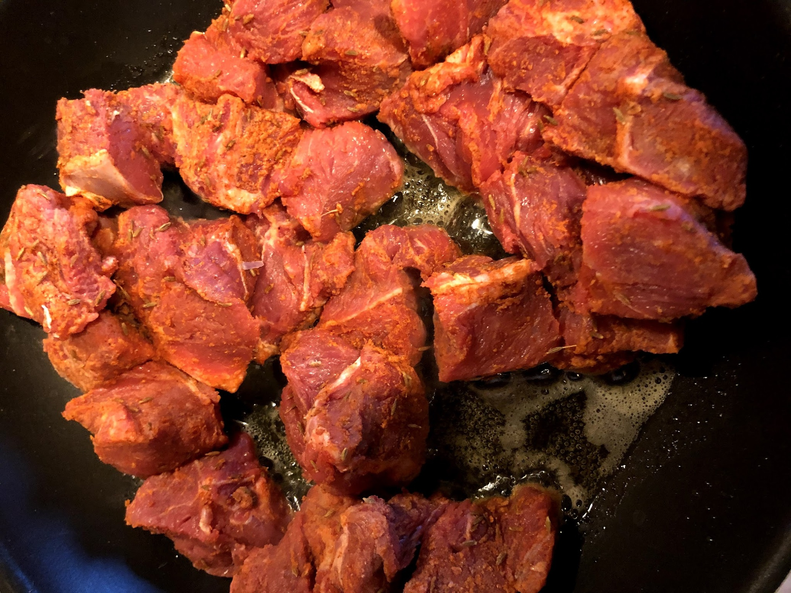
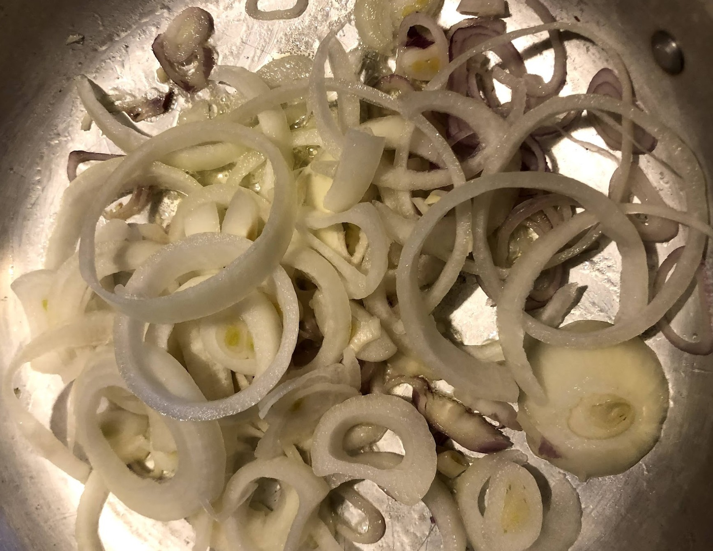
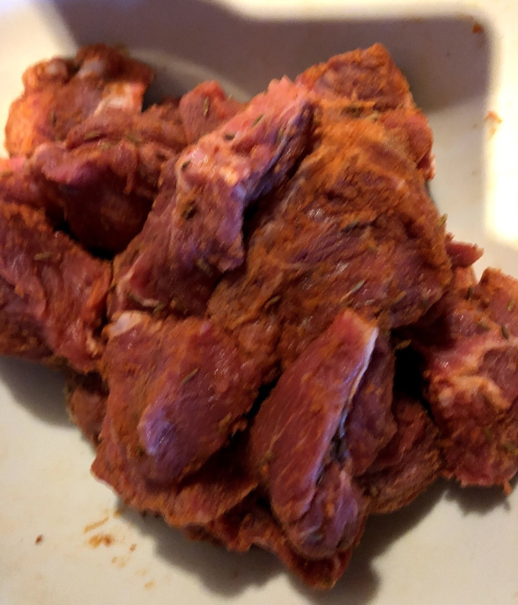
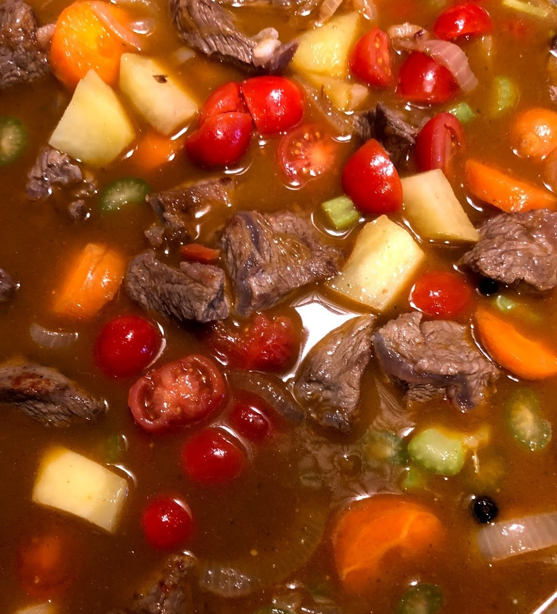
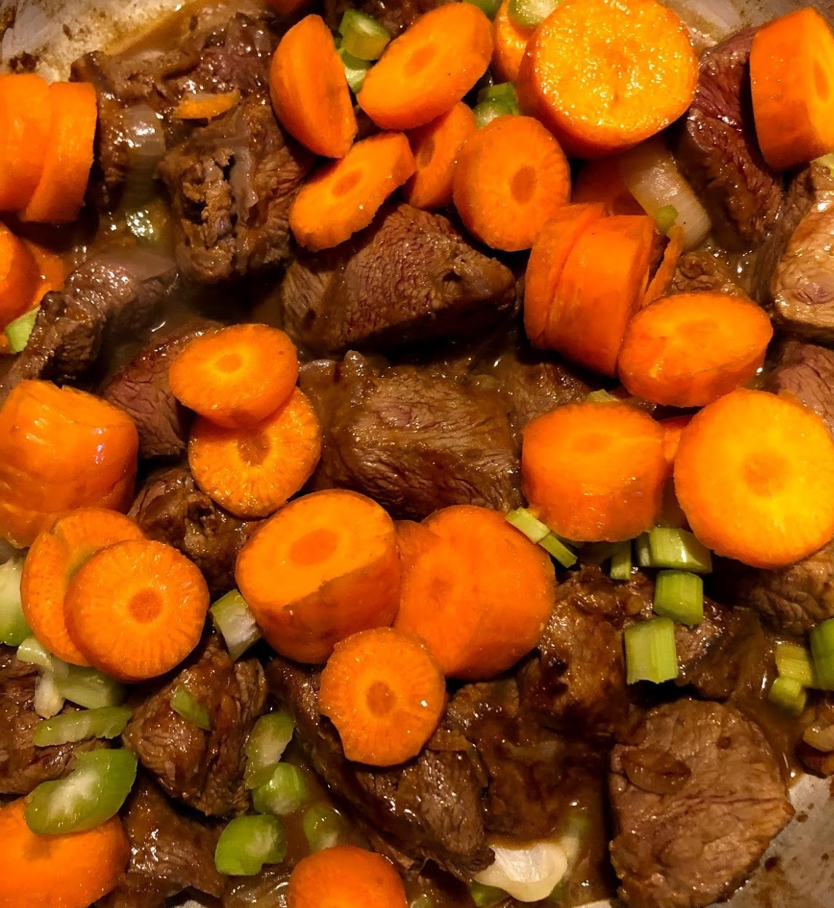
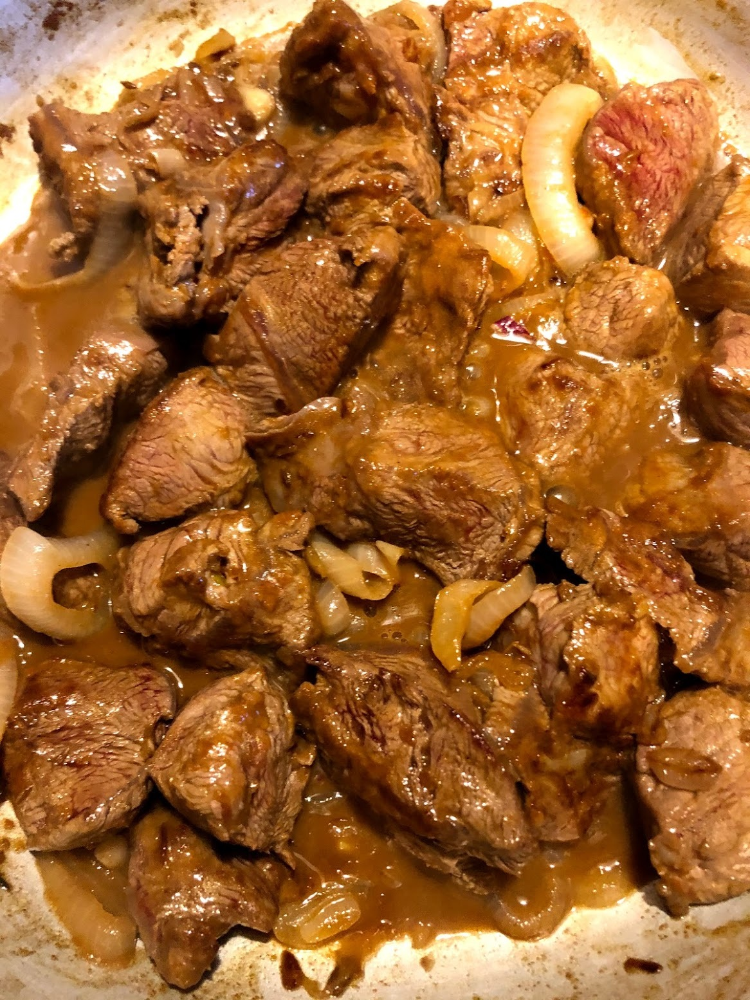
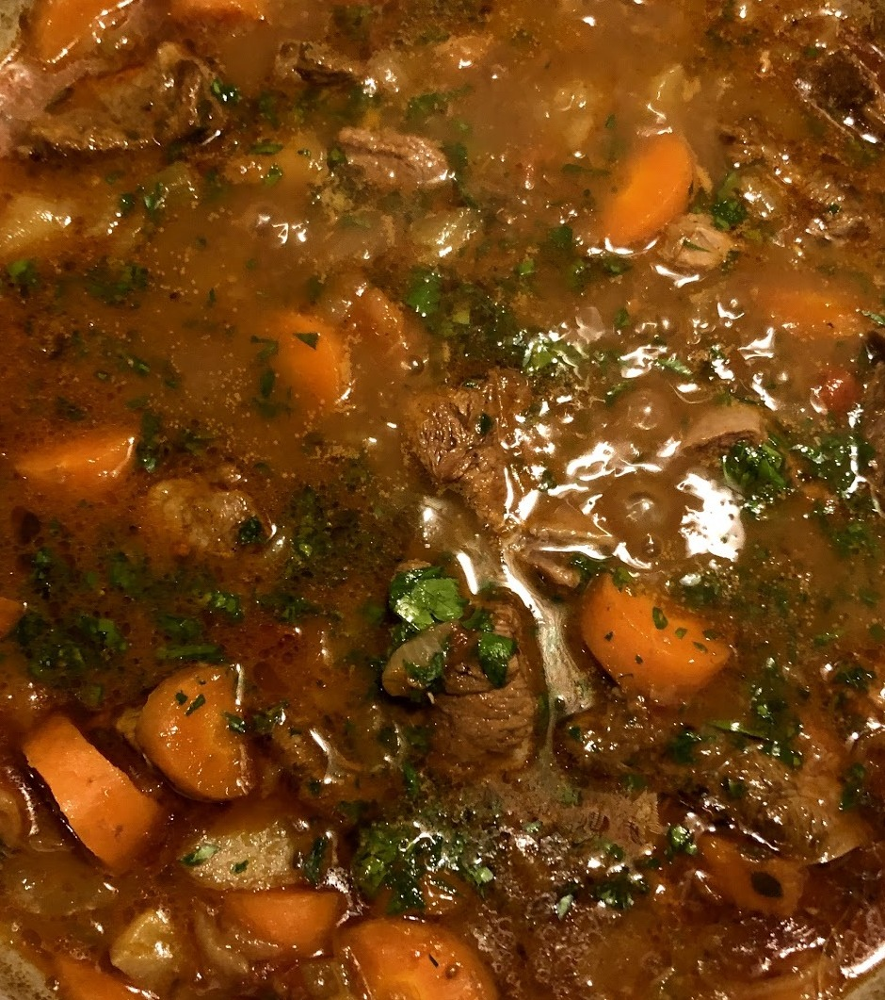
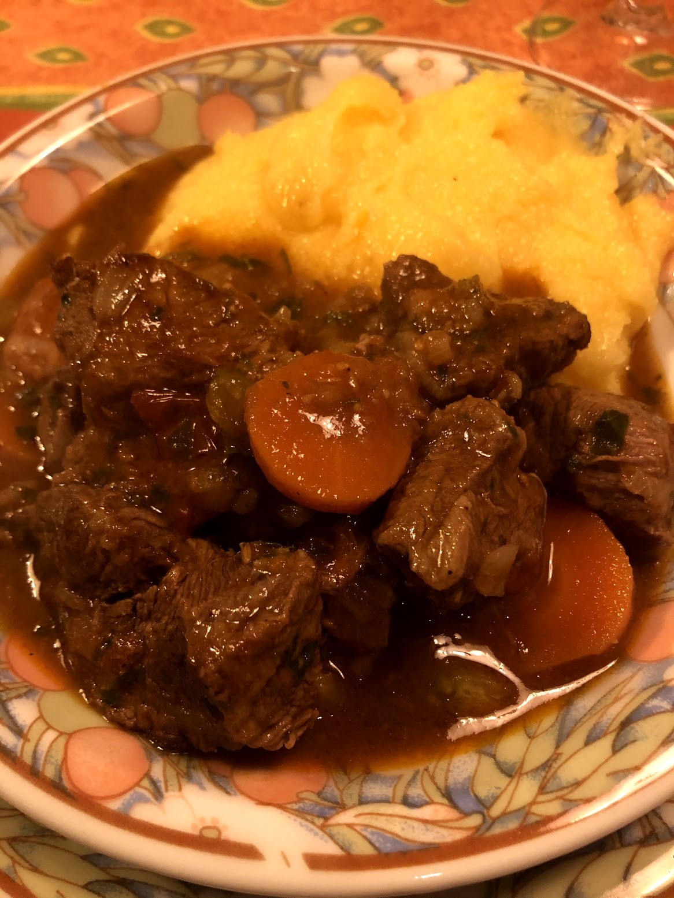

Gulash (variante)
Introduzione e contesto
Questa versione della ricetta del Gulasch non è la ricetta tradizionale originale (ungherese o tirolese). E' una mia interpretazione che fa riferimento alla ricetta de la "Cucina italiana" e in parte come ho gustato in alta val di Casies, da Regihof.

Posto strepitoso, anche per altre ragioni, panorama, gentilezza, prodotti di loro produzione, E' una versione che conserva gli aromi tipici del gulasch quali cumino e paprika, ma presenta le verdure fresche ad alleggerire il piatto. Comunque valuterete voi.
Ingredienti
| Ingrediente | Quantità | Unità | Note |
|---|---|---|---|
| Manzo | 800 | g | scapino o punta di muscolo |
| Patate | un | paio | |
| Cipolla | una | ||
| Carote | 2 | ||
| Pomodorini | |||
| Sedano | alcuni gambi | ||
| Brodo vegetale | |||
| Burro | 100 | g | |
| Prezzemolo | |||
| Cuminio | 1 cucchiaino piccolo | ||
| Paprika | a discrezione | ||
| Sale | |||
| Pepe | |||
| Timo | alcuni rametti | ||
| Scorza di limone grattugiata |
Preparazione
Per cominciare un buon pezzo di manzo. Ottimo lo scapino ma anche la punta di muscolo.

L'importante che contenga un poco di grasso per mantenere teneri i bocconi. Anche un poco di tessuto connettivo, collagene, che si scioglierà solo nella lunga e delicata cottura.(il collagene a basse temperature si scioglie, ad alte temperature diventa coriaceo). Procediamo quindi a infarinare i bocconi, non più di un paio di cucchiai, paprika (più o meno forte secondo i gusti), cumino.

Fare aderire bene massaggiandola a lungo. Intanto avrete messo in un tegame capace la cipolla a dorare in 40 g. di burro. Delicatamente. In un tegame antiaderente sciogliere il burro restante (60 g.) e quindi aggiungere la carne. A fiamma vivace rosolare bene la carne per chiudere velocemente tutti i pori.

Se fa acqua, addio.
Rosolare senza paura di veder scurire. E' la farina con il burro che scuriscono, non la carne.
Quando il vino è evaporato, aggiungere brodo vegetale e mettere il fuoco al minimo. Aggiungere sedano, patata a pezzettini (questi meglio a cottura avanzata perché non si disfino), le carote a rondelle, un paio di grani di ginepro, pomodorini tagliati un poco (40 g.), timo, sale, pepe. La carne dovrà essere ricoperta dal brodo. Cuocere lentamente a fiamma bassa per 2/3 ore.




Per capire quando pronta, deve essere tenera, tanto da disfarsi solo schiacciandola. Inoltre il collagene dovrà essere pure lui senza consistenza, ma non sciolto completamente. La temperatura della cottura dovrà essere minima, Ca. 70 gradi.In genere io preparo il giorno prima, senza completare la cottura.

Servire con polenta tenera ma non liquida.
Note e osservazioni
- Sono indicati tempi di riposo: rispettarli aiuta struttura e sapore del piatto.
- Indicazione di tempo presente nel testo: 30', cottura oltre 2 ore Questa versione della ricetta del Goulash non è la ricetta tradizionale originale (ungherese o tirolese).E' una mia interpretazione che fa riferimento alla ricetta de la "Cucina italiana" e come ho gustato il piatto in alta val di Casies, da Regihof.
{kind=link}